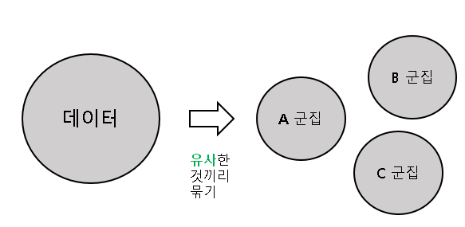

<DIV style="position:absolute; left:500; top:40;">
  <font size=7>데이터천재들은 어떻게 기획하고 분석할까?</font size></div>


    <DIV style="position:absolute; left:560; top:300;">
      <font size=6>
        군집이란 ‘사람이나 건물 따위가 한 곳에 모인 것‘
    </font size></div>
    <DIV style="position:absolute; left:560; top:350;">
      <font size=6>
      빅데이터에서의 ‘군집분석’은 주어진 데이터로부터 유사한 개체나
    </font size></div>
    <DIV style="position:absolute; left:560; top:400;">
      <font size=6>
        특징을 찾아내어 전체를 몇 개의 그룹으로 묶는 것을 의미.
    </font size></div>

    <DIV style="position:absolute; left:700; top:750;">
      <font size=6>
        군집분석은 주식 분석, 고객 분석, 마케팅
    </font size></div>

    <DIV style="position:absolute; left:700; top:800;">
      <font size=6>
            등등에서 높은 효용을 보일 수 있음
    </font size></div>


    <DIV style="position:absolute; left:700; top:450;">
     
    </div>


<a href="webpage.html"
 <DIV style="position:absolute; left:130; top:80;">
  </div></a>
   <a href="webpage2.html">
    <DIV style="position:absolute; left:100; top:330;color:#25D792">
     <font size=6>빅데이터의 구성요소</font size></div></a>
      <a href="webpage3.html">
       <DIV style="position:absolute; left:100; top:430;color:#25D792">
        <font size=6>데이터의 활용</font size></div></a>
          <a href="webpage4.html">
           <DIV style="position:absolute; left:100; top:530;color:#FF0000">
            <font size=6>군집분석</font size></div></a>
              <a href="webpage5.html">
               <DIV style="position:absolute; left:100; top:630;color:#25D792">
                <font size=6>인공지능</font size></div></a>
